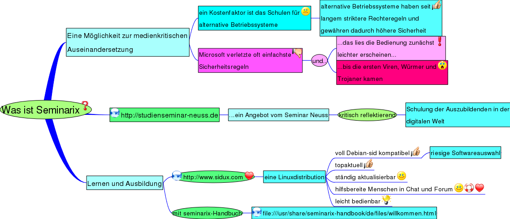

Was ist Seminarix

- Eine Möglichkeit zur medienkritischen Auseinandersetzung
- ein Kostenfaktor ist das Schulen für alternative Betriebssysteme
- alternative Betriebssysteme haben seit langem striktere Rechteregeln und gewähren dadurch höhere Sicherheit
- Microsoft verletzte oft einfachste Sicherheitsregeln
- und..
- ...das lies die Bedienung zunächst leichter erscheinen...
- ...bis die ersten Viren, Würmer und Trojaner kamen
 http://studienseminar-neuss.de
http://studienseminar-neuss.de- ...ein Angebot vom Seminar Neuss
- kritisch reflektierend
- Schulung der Auszubildenden in der digitalen Welt
- Lernen und Ausbildung
- http://www.sidux.com
- eine Linuxdistribution
- voll Debian-sid kompatibel
- riesige Softwareauswahl
- topaktuell
- ständig aktualisierbar
- hilfsbereite Menschen in Chat und Forum
- leicht bedienbar
- mit seminarix-Handbuch